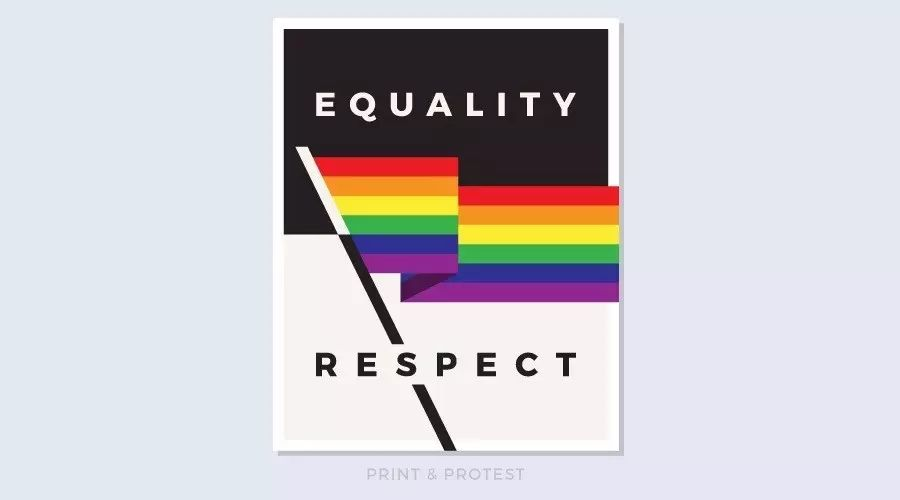
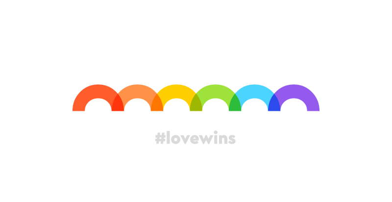

棱镜 | 平权行动中的身份之轭——一个思想与行动的困境
原创：
丸子
酷儿论坛
2017-07-19
酷儿论坛

motss2002
杭州酷儿论坛（motss.info）致力于为杭州及周边地区学生性少数人群提供一个多元、健康、平等的环境，促进自我认同和社会认可。
一、平权实践中“态度／立场先行”的现象
态度和立场本应是理性思维活动水到渠成的产品——它们不是唯一的产品，也不是思维本身可欲的目标产品，而是一种副产品，是思辨过程到达一个节点后，是思维活动取得阶段性成果、能暂时以一个结论进行概括后，自然附带出的一种综合判断和气质表达。
然而，理性思辨的过程是复杂且幽微的。在理性的运行过程中，逻辑的进路回环曲折且布满岔口，我们无法一眼望见思维的终点，而且思维陷阱与理性途径往往只有一步之差。在当下媒体语境“标题党”的取向之下，公共讨论已经已经日益成为了敌对意见双方的彼此攻伐／“讨伐”，甚至是“混战”的场所，渐失其理性对话的原本吁求，也使得繁杂精细的理性思辨过程无法在其中发挥作用。
与此相反的是，立场和态度通常是清晰的、可见的、高度排他的、在修辞上具备强大压迫力的，同时，立场话语的简洁性和单一性让它可以便利地通过各种宣传手段进行包装和流通，在情绪的包裹下具备了极强的攻击力和战斗性，并由此在传播领域获得了巨大的感染力。但这种诉诸点燃情绪的感染力常常只对游移不定的围观路人起效，对于真正的持异见者，反倒可能会激起他们的不满情绪，进而取消了理性对话的可能。那么，此时我们不得不面对的一个问题是，我们到底是要收编一批被我们制造出来的情绪所打动／“煽动”的人呢，还是经过理性思考和自主选择，最终“决定”站在我们这一边、为我们摇旗呐喊的人？
一个典型现象是，在微博等公众意见的领地上，不少女权主义者的言语中体现出的话语逻辑往往立场先行。不少人认为，女权主义的锋芒在其理论话语对性别霸权的尖锐批判中显现，因而怀着“解构”的姿态检视着旁人言辞表达中泄露出的男权色彩。然而解构并非只是一种态度，它更是对话语生成的背景和话语不经意展现出的细节，以一种谱系学的视角来仔细考察其中权力运作的痕迹与实施规训的霸权。女权主义的批判力究竟从何而来？是从不由分说地给别人扣上性别歧视者的帽子，进而以解构的立场大肆讥讽中来的吗？微博单条140字的字数限制决定了意见表达只能以短平快的方式进行急速碰撞，此时理性、逻辑、正当性都被抛之脑后，剩下的只有比拼谁的态度更强硬、谁更善于握持道德正当性的标尺、从而占据公共舆论的道德上风。政治正确作为女权主义的道德支持，往往使得女权主义者在此种火拼中凯旋。然而事实上，这与女权主义内蕴的平等内涵是冲突的。的确，很多对性别歧视的申辩是基于结构功能主义的思考范式，它们往往乍一看颇有道理，并获得了不少追随者——这是秉持着性别平等权益和性别社会建构理念的我们所不能接受的。但即使如此，我们也不能单方面地取消公共讨论的机会——意见的来回碰撞、观点的表达和反驳本身就是彰显平权精神的一种实践。所有人都是公共场域下的平等主体，我们可以被说服，但决不接受被驯服。作为倡导平权的先行者，面对异质话语，我们更应该在对话中传递自我反思的启蒙精神，启发公众思考平权理念的价值。
此外，这种立场先行的表达模式所制造的冲突感，让不少人一开始就在情绪上反感女权主义，在策略上埋下了不利后果。当政治正确成为了一个被滥用的核武器（我觉得这个譬喻很合适，在现在的交流空间中，很少有人能直接正面对抗政治正确的光荣话语，来不及申辩就被轰击成碎片了。而且更糟糕的是，他们的意见并没有真正被消灭，而是在攻击者的脑海中被消灭／消解了，维护少数群体生存权益的政治正确反而成为加深社会割裂状态的武器，让社会的对立分裂在胜出者幻觉的粉饰下滑向无法弥合的深渊），其本身的正当性也被置于岌岌可危的处境中。普遍人权的理念是平权行动的思想来源，而政治正确作为从人权基点出发的逻辑链条中的一个结论，在话语实践中却被逐渐赋予了一层道德教化的色彩，使其成为了一些人用以进行道德指控的工具。我们应做的是对政治正确的命题进行重新祛魅，还原其“平权”的价值内核，避免其成为政治攻击中被用来进行价值阶序定位的武器。
立场来自于对自我身份的定义，对自我与他人界限的划分，对中心与他者的关系的理解。“我是一个女权主义者”究竟意味着“不女权的人都是愚民”，从女权主义者的身份定位中获得了一种俯瞰他人的优越感，还是从女权主义者的身份中感受到了一种责任——一种知行合一地践行平权理念的愿望，一种以平等姿态分享自己所笃信的理念的能力。
哈贝马斯认为，公共意见空间中每一个参与者都应当是理性公民，是为了形成积极的“公共舆论”而不断互动着的主体。如果公共空间丧失了交往理性，只会出现两种可悲的结局——或者每个人都变成孤立的原子，对集体社会漠不关心；或者引发民族主义暴乱，所有人陷入了情绪的混战之中。这是我们应当充分警惕的。
二、社群行动中的个人与集体之辨
每个人生活经历和具体处境的不同决定了思想和意见的高度个体化。在某种意义上，个体叙事是不可通约的。但要想凝聚成一支政治力量，发出强有力的号召并进行动员，同时向特定目标发动进攻，人们必须彼此妥协、达成共识、制定一个相对共有的行动目标。所以，一旦个体自愿形成集体，一个人已经（至少是部分地）让渡了自主性。骄傲游行中万千面孔都是同一张面孔。虽然它致力于展现给大众的是，我们每个人都支持平权，这是一种数量上的威力，但是这个靠数量来发声的逻辑基点是，这个活动把所有人都变成了同一个人。
那么在个人与集体的关系上，我们应当如何理解平权主义者所形成的集体呢？它的内部凝聚力如何，是松散的“邦联”还是紧密的“联邦”？它是建立在什么样的纽带之上的？这种联系纽带是如何取得合理性与合法性的？如何处理“中央”与“地方”的关系？每一个社群都无法逃避这个问题，因为这是共同体想要维持其存在必须思考的首要问题。

而且当行动取得成果之后呢？历史经验似乎在暗示我们我们，一个建立在不甚稳固基础之上的共同体很可能在完成特定使命之后就走向终结。随着共同体的瓦解，最初“共同作战的同志们”又会分化出多数／少数群体，压迫的可能性依然存在，甚至可能在失去一个共同的敌人之后变得更加残酷。
我们不得不思考一种极端情况：那些少数中的少数中的少数，是否只能永远游离在边缘？他们的权益谁来保证？难道平权终究还是只能成为“历史线性的渐进发展趋势之下”的副产品，成为等待着被多数人看到、被拯救的“睡美人”，而那些最“离经叛道”的人永远会成为他们所处时代的牺牲品？
一种可能的对策是，靠一个真正普世且深入人心的价值观念让大家凝聚在一起，确保这个共同体不会破产——比如，“平权”？。如此，这个观念绝不能只是口号，而要在行动中彻彻底底地“整全”地表达出来，从口号到行动，从思维理念到行事方式，从“前设”到“后设”。平权理念必须贯彻到每一个细节上，没有任何一个问题是可以忽略或者可以妥协的小问题，因为怨恨的情绪和分崩离析的趋势往往在细节中产生。
引入政治哲学的一种思考维度，“对内民主，对外霸权”的策略似乎是无法实现的。内外之辨是持续变动着的，昨日的同盟可能就是今日的仇敌，所以必须要“从内到外”地实行平权。然而思维到了这里似乎又会滑入集体主义的陷阱。个体性在此时强烈地体现了出来，“虽然暂时结成了同盟，但是每个人依然是来去自由的主体，他们根本不想把自己的生命实践都投入其中”，如果将这种理念以强制性的要求进行贯彻，又会让多元和个人意志的命题陷入危机。在不同于古典政治哲学的现代自由主义政治哲学的思考范式下，“整全”本来就是对私人领域的一种干涉和入侵，为伯林-罗尔斯的理性多元主义所不容，而集体化运动的达摩克利斯之剑让我们不敢轻易设想对整全的实践可能。
平权的思想框架内其实存在着难以愈合的理论割裂——这种割裂在思维和行动的冲突中强烈地体现了出来。平权的概念本身是在社会主义和自由主义的夹缝中生长出来的，同时受到两边理论的撕扯，因此它的内部也有很大的思维张力，如何填补这个理论裂缝是一个艰巨的任务。无论是诉诸日常生活的个体直觉，还是精英主义的代议制民主，似乎都无法得到完美的解决。

三、结语
为何我用“轭”这个隐喻来意指身份概念在平权思维与行动中的位置？轭本意为驾车时搁在牛马颈上的曲木。在我应用这个隐喻的语境中，一方面，作为轭的身份概念代表着一种成形的范式，一个予以实践的路径。它是开发思想潜能的一种手段，一种现阶段可以作为行动依据的确定性。另一方面，它也是对可能性的限制，对想象力的压抑。简而言之，轭帮助我们确定方向、推进行动，但也让我们受限于它所框定的单一的路径之中。
应当继续思考的是，这个轭是谁加诸我们身上的？我们在何种程度上受到这个轭的限制？究竟哪些东西被置于身份之轭的控制之下了？是否有一些是我们还未意识到的？摆脱身份之轭是否能在思维和行动中成为可能？如果不能在哲学意义上得到彻底解决，有没有什么具体策略性的建议可供参考？
启发我们思考这些问题，是身份之轭这个隐喻所能开启的最大的理论价值。
长按二维码向我转账
“”
受苹果公司新规定影响，微信 iOS 版的赞赏功能被关闭，可通过二维码转账支持公众号。
阅读
微信扫一扫
关注该公众号
关注该公众号
使用小程序